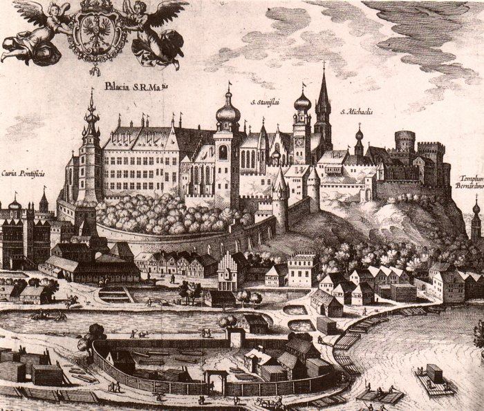
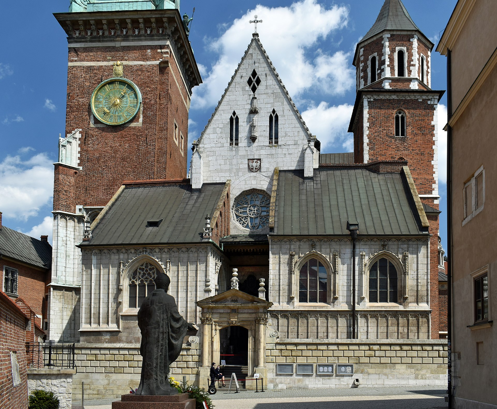

The History of the Wawel Castle
Early Beginnings and the Origins of Wawel Hill
The history of Wawel Castle dates back to the early Middle Ages, with the first traces of
settlement on Wawel Hill found as far back as the 7th century. Wawel Hill, located along the
Vistula River, was a natural choice for early settlement due to its strategic location and
defensive advantages. The area was inhabited by Slavic tribes long before the formation of the
Polish state, and it is believed that the first rulers of Poland, such as the legendary King
Krakus, made Wawel their stronghold.
In the 10th century, the first stone structures were erected on the hill under the reign of the
Polish Piast dynasty. It became the political center of the early Polish state, serving as the
residence of Poland’s first kings. The city of Kraków, situated below the hill, soon became the
capital of Poland, further solidifying the importance of Wawel.

The Royal Residence
Wawel Castle became the official residence of the Polish kings in the 11th century. The first monarch to
reside in the castle was King Bolesław I the Brave, who began the construction of the first royal
palace. Over the centuries, various Polish kings made substantial additions to the castle, transforming
it into the grand royal residence we know today.
One of the most significant periods in the castle’s history occurred during the reign of King Casimir III
the Great (1333–1370). King Casimir was responsible for major architectural reforms at Wawel, including
the construction of the first royal chapel and the rebuilding of the castle walls. He also made Kraków
the primary center of education and the arts in Poland.
The castle's importance reached its peak during the reign of King Sigismund I the Old (1506–1548).
Sigismund oversaw a major renovation and expansion of Wawel Castle, transforming it into one of the most
magnificent Renaissance palaces in Europe. Under his rule, the castle became the cultural and political
heart of Poland.
The Decline and the Loss of Wawel’s Royal Status
In the late 16th century, the Polish capital was moved from Kraków to Warsaw, which marked the beginning
of Wawel Castle's decline as a royal residence. Although the castle remained an important symbol of
Polish monarchy, it was no longer the center of political life in Poland. In the years that followed,
Wawel underwent a series of changes, including its use as a military stronghold and later as a
museum.
The fall of the Polish-Lithuanian Commonwealth in the late 18th century and the subsequent partitions of
Poland by Russia, Prussia, and Austria further diminished the importance of Wawel. For many years, the
castle was neglected and even repurposed for other uses. It was not until Poland regained independence
in 1918 that efforts were made to restore and preserve the castle as a national monument.
The Architecture of the Wawel Castle
Romanesque Beginnings
The earliest structures on Wawel Hill were built in the Romanesque style during the 11th and 12th
centuries. These were relatively simple, functional buildings designed for defense and royal residence.
The Romanesque architecture at Wawel can still be seen in the crypts beneath the Wawel Cathedral, where
several early Polish kings are buried.
Gothic Influence
During the reign of King Casimir III the Great, Wawel Castle underwent significant reconstruction in the
Gothic style. This period marked the construction of the Wawel Cathedral’s main body and the first royal
chapel. The Gothic style emphasized verticality, pointed arches, and intricate stonework. The castle’s
defensive walls were also enhanced during this time, with the addition of towers and fortifications to
protect the royal residence.
One of the most prominent Gothic features is the Wawel Cathedral itself. The cathedral's construction
began in the 14th century and was completed in the 15th century. The cathedral’s towering spires,
stained glass windows, and elaborate chapels are masterpieces of Gothic architecture, reflecting the
growing wealth and power of the Polish monarchy.
Renaissance Glory
The most dramatic transformation of Wawel Castle occurred during the reign of King Sigismund I
the Old in the early 16th century. Under his rule, the castle was extensively renovated in the
Renaissance style, which was characterized by symmetry, classical elements, and an emphasis on
harmony and proportion.
The Royal Castle's most significant addition during this period was the construction of the
"Sigismund Wing," which became the centerpiece of the palace. This wing was designed by the
famous Italian architect Bartolomeo Berrecci and featured elegant arcades, a beautiful
courtyard, and sumptuous interior chambers decorated with frescoes and tapestries.
The Wawel Castle’s Renaissance period also saw the addition of magnificent courtyards, including
the Upper and Lower Courtyards, both of which are framed by elegant arcades and feature
harmonious proportions. The walls were adorned with sculptures, and the royal chambers were
furnished with some of the finest pieces of Renaissance art.

Baroque Additions
In the 17th century, during the reign of King John III Sobieski, the castle was further altered with
Baroque elements. The Baroque style is known for its dramatic, expressive design, and it introduced
grandeur and opulence to Wawel Castle. The royal chapel and the Sigismund Chapel, one of the most
beautiful structures at Wawel, were given Baroque facades and ornate interiors.
Though much of the Baroque influence was lost in later centuries, it remains an important part of the
castle's architectural legacy.
The Wawel Castle Today
The Wawel Cathedral and Royal Tombs
One of the most significant sites within the castle complex is the Wawel Cathedral. It is the final
resting place of numerous Polish monarchs, including kings and queens who shaped the nation’s history.
The cathedral also holds the tombs of national heroes and important figures such as the famous general
Józef Piłsudski.
The cathedral's stunning chapels, like the Sigismund Chapel, are masterpieces of Renaissance and Baroque
art. The cathedral is also the site of Poland's royal coronations, and it continues to play a central
role in the country’s religious and cultural life.
The Royal Apartments and the State Rooms
The royal apartments within Wawel Castle are another major attraction. These beautifully preserved rooms
offer a glimpse into the lives of Polish monarchs during the Renaissance and Baroque periods. Visitors
can walk through the royal chambers, where they can admire the opulent furniture, tapestries, and
artwork that once adorned the royal court.
The State Rooms are equally impressive, featuring lavish décor and beautiful art collections. Many of
these rooms have been meticulously restored to reflect their original splendor.
Art Collections and Museums
Wawel Castle is home to several museums, including the Wawel Royal Art Collection and the Wawel State
Rooms. These museums house one of the largest collections of Polish art, including paintings,
sculptures, and tapestries from the Renaissance and Baroque periods. Among the most important works in
the collection are paintings by European masters such as Rembrandt, Titian, and Rubens.
The Wawel Treasury and Armoury is another must-see museum. Here, visitors can view a stunning collection
of royal regalia, ceremonial weapons, and armor, including the famous Szczerbiec sword, the legendary
sword of Polish kings used during coronations.
Wawel Castle as a National Symbol
Beyond its architectural and artistic beauty, Wawel Castle is a symbol of Polish history, identity, and
national pride. The castle has witnessed some of the most important events in Polish history, from royal
coronations to state funerals. It has served as the center of Poland's power for centuries, and it
remains an enduring symbol of Polish resilience and sovereignty.
Wawel Castle’s significance goes beyond its historical and artistic value. It is a place of national
memory, where the past and present of Poland converge. For Poles, Wawel Castle represents a link to
their royal past and a reminder of the struggles for independence and freedom.